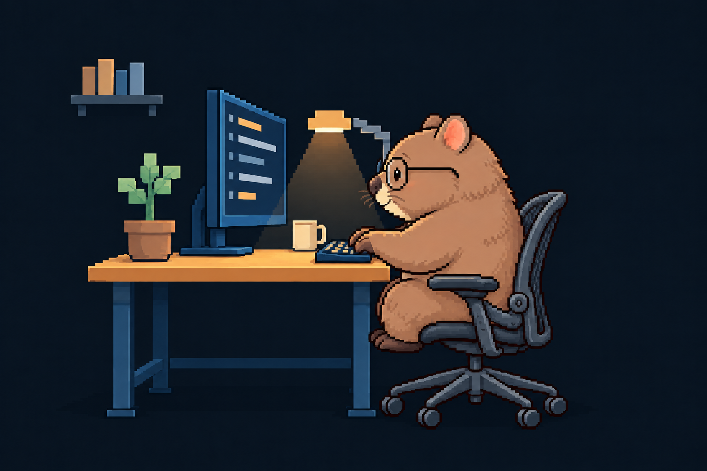
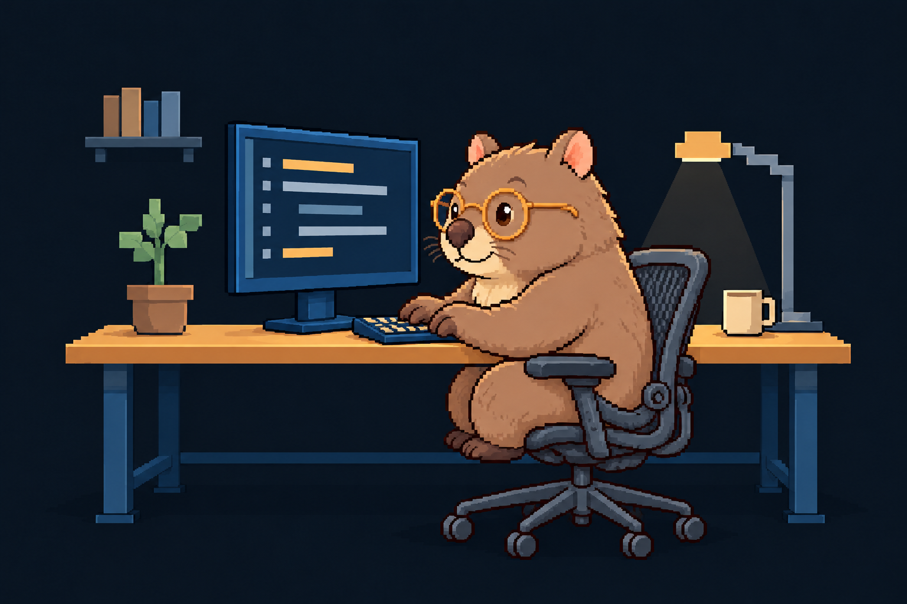
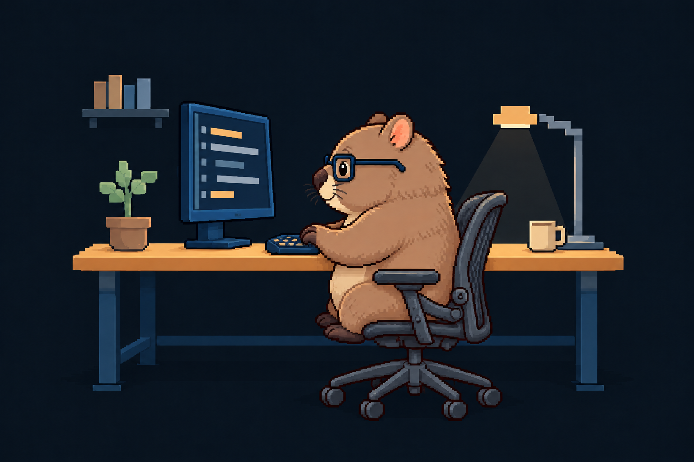
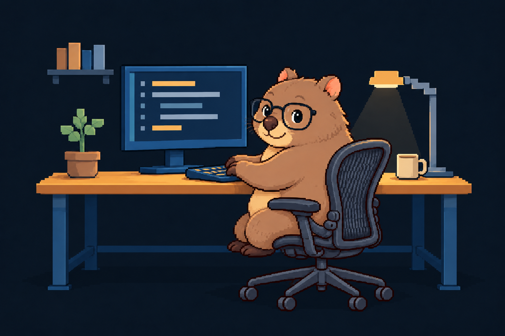
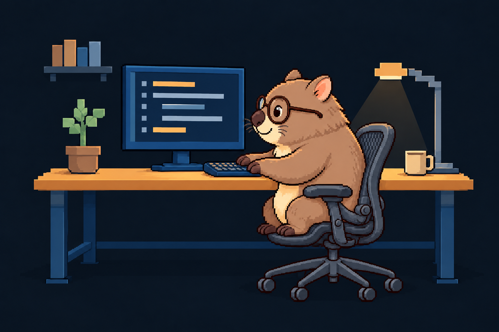

WOMBAT / GLASSES / 01–05
안경 쓴 웜뱃 — 옆모습 시안
안경의 모양과 색, 얼굴이 향한 각도를 비교해 보세요. 이미지를 누르면 원본을 새 탭에서 볼 수 있습니다.

02호박색 안경 · 사선 옆모습

03네이비 사각 안경 · 옆모습

04검정 둥근 사각 안경 · 사선 옆모습

WOMBAT / GLASSES / 01–05
안경의 모양과 색, 얼굴이 향한 각도를 비교해 보세요. 이미지를 누르면 원본을 새 탭에서 볼 수 있습니다.




